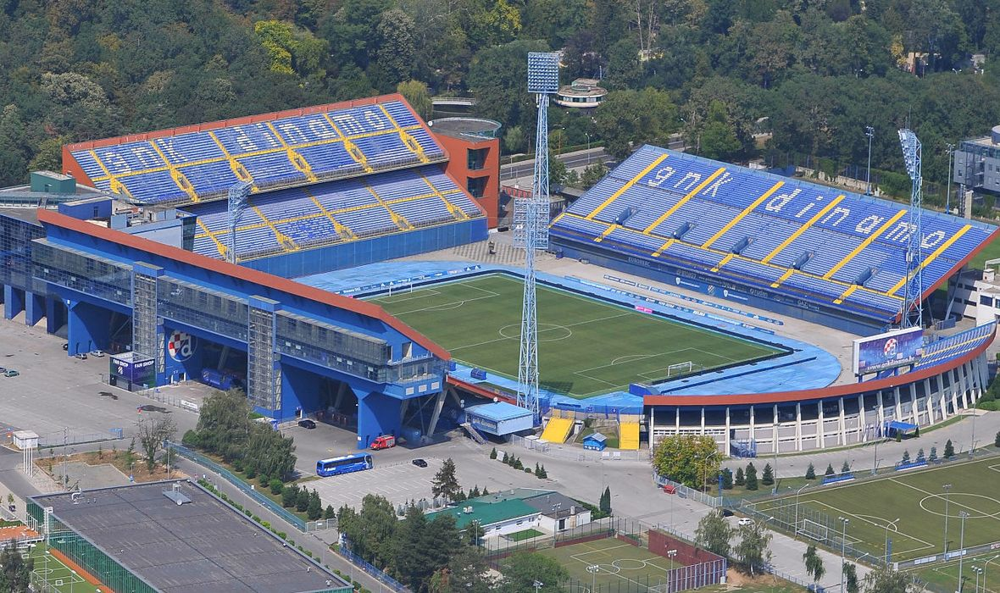
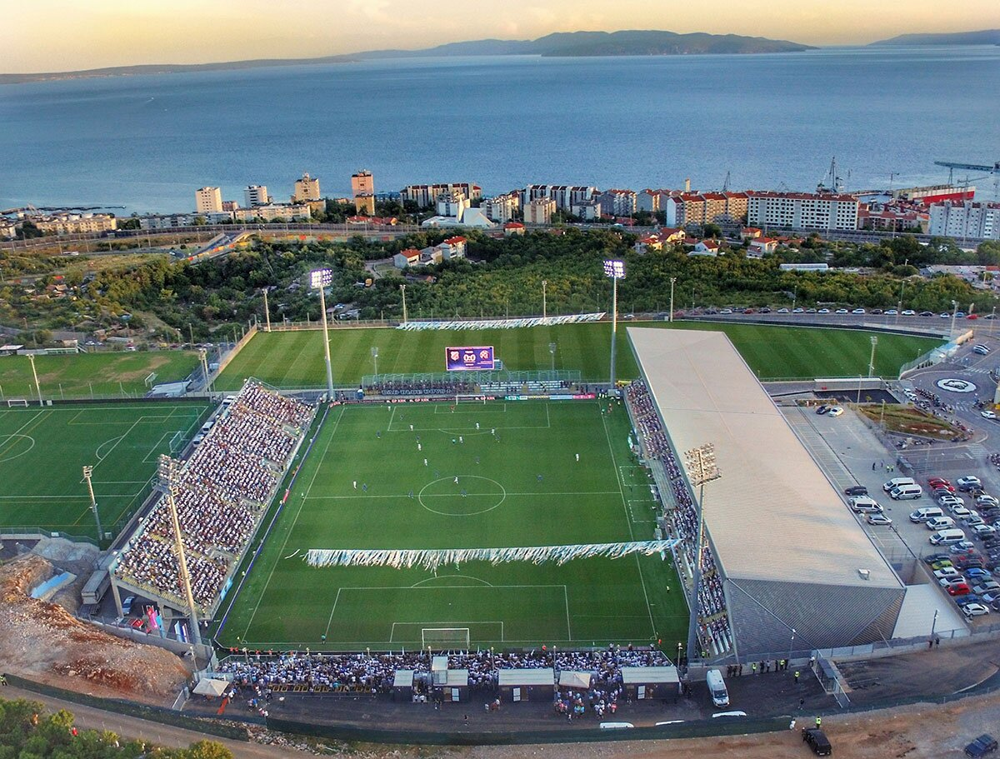
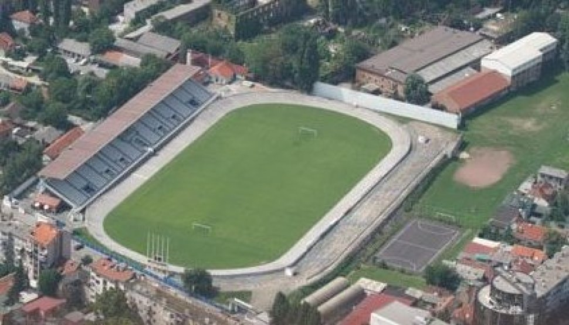

<!DOCTYPE html>
<html lang="en">
  <head>
    <meta charset="UTF-8" />
    <meta http-equiv="X-UA-Compatible" content="IE=edge" />
    <meta name="viewport" content="width=device-width, initial-scale=1.0" />
    <title>Document</title>
    <script src="https://api.mapbox.com/mapbox-gl-js/v2.3.1/mapbox-gl.js"></script>
    <link
      href="https://api.mapbox.com/mapbox-gl-js/v2.3.1/mapbox-gl.css"
      rel="stylesheet"
    />
    <link rel="stylesheet" href="index.css" />
  </head>
  <body>
    <div id="conteiner">
      <div id="map"></div>
    </div>
    <script>
      mapboxgl.accessToken =
        "pk.eyJ1IjoiZGFuaWplbHMyMjIiLCJhIjoiY2t3ajU1ZDJrMHZrazJ4cGszMWpyNnN2aiJ9.EW4F90FVYnh_59ulw5BepA";
      var map = new mapboxgl.Map({
        container: "map",
        style: "mapbox://styles/mapbox/streets-v11",
        center: [15.243074887829323, 45.465932173989636],
        zoom: 7.5,
      });

      map.on("load", () => {
        map.addSource("places", {
          // This GeoJSON contains features that include an "icon"
          // property. The value of the "icon" property corresponds
          // to an image in the Mapbox Streets style's sprite.
          type: "geojson",
          data: {
            type: "FeatureCollection",
            features: [
              {
                type: "Feature",
                properties: {
                  description:
                    '<strong>Maksimir</strong><p>Capacity: 35 123</p>',
                  icon: "stadium-15",
                },
                geometry: {
                  type: "Point",
                  coordinates: [16.017955498338655, 45.81874892425734],
                },
              },
              {
                type: "Feature",
                properties: {
                  description:
                    '<strong>Rujevica</strong><p>Capacity: 8 279</p>',
                  icon: "stadium-15",
                },
                geometry: {
                  type: "Point",
                  coordinates: [14.40219348297831, 45.34792438013436],
                },
              },
              {
                type: "Feature",
                properties: {
                  description:
                    '<strong>Stadion Kranjčevićeva</strong><p>Capacity: 5350</p>',
                  icon: "stadium-15",
                },
                geometry: {
                  type: "Point",
                  coordinates: [15.960805964195542, 45.80461453044128],
                },
              },
            ],
          },
        });
        // Add a layer showing the places.
        map.addLayer({
          id: "places",
          type: "symbol",
          source: "places",
          layout: {
            "icon-image": "{icon}",
            "icon-allow-overlap": true,
          },
        });

        // When a click event occurs on a feature in the places layer, open a popup at the
        // location of the feature, with description HTML from its properties.
        map.on("click", "places", (e) => {
          // Copy coordinates array.
          const coordinates = e.features[0].geometry.coordinates.slice();
          const description = e.features[0].properties.description;

          // Ensure that if the map is zoomed out such that multiple
          // copies of the feature are visible, the popup appears
          // over the copy being pointed to.
          while (Math.abs(e.lngLat.lng - coordinates[0]) > 180) {
            coordinates[0] += e.lngLat.lng > coordinates[0] ? 360 : -360;
          }

          new mapboxgl.Popup()
            .setLngLat(coordinates)
            .setHTML(description)
            .addTo(map);
        });

        // Change the cursor to a pointer when the mouse is over the places layer.
        map.on("mouseenter", "places", () => {
          map.getCanvas().style.cursor = "pointer";
        });

        // Change it back to a pointer when it leaves.
        map.on("mouseleave", "places", () => {
          map.getCanvas().style.cursor = "";
        });
      });
    </script>
  </body>
</html>
